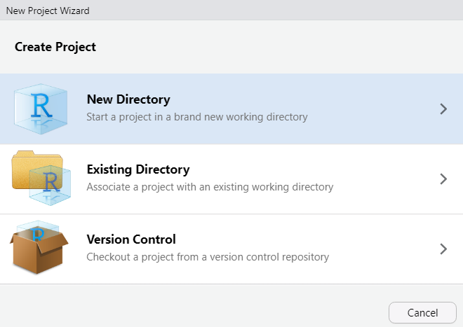

Using R and RStudio
Basic workflow and good practices
In general
- Use R with RStudio
- Create an RStudio project for each data analysis project
- Keep an analysis notebook, which includes R code + output
- Organize your project folder into subfolders (data, figures, etc.)
- Everything should always be reproducible from code + input data
Project setup
Create an RStudio project
- File > New project…
- New Directory
- New Project
- Use an informative directory name
- Store it where you will find it

RStudio project organization
- Keep data files and analysis notebooks in your project folder
- Use subfolders: data, figures
- Use
here()to refer to file locations
Reproducibility
Your data analysis project should be self-contained, which means that everything that is needed to reproduce the results is stored in the project folder.

RStudio project setup
- Go to your project folder
- Create two subfolders: data, figures
- Download
data_disagreement.txtfrom OSF project - Save in data subfolder
Use analysis notebooks
- RMarkdown files combine text, code, and output
- Can be exported as html/Word/PDF file
- In the analysis notebook:
- Write down what you did and why you did it
- Run analyses
- Look at output (figures, tables,…)
Create an RMarkdown notebook
- File > New file > RMarkdown document…
- Use default options, click “Create”
- Save it in your project folder
- Knit it: Click the Knit button
Play around with the RMarkdown file
- Compare contents of file with rendered version
- Change/add text and knit again
- Have a look at the RMarkdown Cheat Sheet
- Run code inside of RMarkdown file
- Keyboard shortcuts
- Insert code chunk: Ctrl + Alt + I (Mac: Command + Option + I)
Getting data into R
Data and R: Warnings
- Importing data into R can be frustrating
- Getting them into shape for analysis can be tedious
- See R script
data_preparation.Rmdfor the preparation of the disagreement data
Data preparation: General workflow
- Data entry/annotation usually in MS Excel
- Store Excel spreadsheet in subfolder
data/input_data - Load into R (document this step in code form)
- Prepare for analysis
- Save in .txt format in subfolder
data/analysis_data
Reproducibility
The .txt format ensures that your data can be opened using other software (interoperability).
Data preparation: Simple rules
- Lots of work can be avoided by following a few simple rules
- Rows and columns
- Columns are variables
- Rows are observations
- Avoid blank rows and blank columns
- The first row gives the name of the variables
Data preparation: Naming conventions
- Avoid blank spaces and special symbols (underscore _ is OK)
- Do not begin variable names with numbers
- R is case-sensitive (“Yes” and “yes” are treated as different)
- Code missing values (empty cells) as NA
Errors
A lot can go wrong when reading data into R. Make sure you routinely include error checks into your workflow. Always carefully inspect the data at different stages of processing/analysis.
R basics
R: General advice
- Use the tidyverse set of packages
- Use ggplot2 for data visualization
- Workflow: Document every step using code
- Aim: Full reproducibility based on code + data

Using R packages
- You need to install a package only once:
install.packages() - Packages must be loaded at beginning of R session:
library() - Please install and load the following packages:
tidyverse,here
In R, everything is an object
- Functions, data tables, etc.
- Create an object by assigning something to a new name
- Assignment operator:
<-(shortcut: Alt + -) - New objects then exist in R’s workspace
- Important object types:
- Vector: Sequence of elements (e.g. names, numbers)
- Data frame/tibble: Data tables
In R, you do things using functions
- Functions do the work in R (calculation, graphing, etc.)
- Have parentheses at the end of their names
- We give instructions to a function using its arguments
function(<argument> = <value>)
Working with data tables
Working with data tables
read.table()to read in.txtfileshere()to specify the directory path (package:here)
Look at the contents of a data frame: str()
'data.frame': 353 obs. of 8 variables:
$ strategy : Factor w/ 3 levels "direct","indirect",..: 3 1 1 2 1 3 1 1 1 1 ...
$ conv : Factor w/ 22 levels "A","B","C","D",..: 2 2 2 2 2 2 2 2 2 2 ...
$ speaker : Factor w/ 44 levels "Adriana","Ah Sa",..: 6 6 27 27 6 27 6 27 6 27 ...
$ gender : Factor w/ 2 levels "f","m": 1 1 2 2 1 2 1 2 1 2 ...
$ group : Factor w/ 4 levels "hk","int","mc",..: 2 2 2 2 2 2 2 2 2 2 ...
$ social_dist: Factor w/ 2 levels "distance","familiar": 1 1 1 1 1 1 1 1 1 1 ...
$ involved : Factor w/ 2 levels "no","yes": 1 1 2 2 1 2 1 2 1 2 ...
$ hk : Factor w/ 2 levels "no","yes": 1 1 1 1 1 1 1 1 1 1 ...Look at the first rows of a data frame: head()
Use $ to access a column (variable) in the data frame
[1] non_agree direct direct indirect direct non_agree direct
[8] direct direct direct direct direct non_agree direct
[15] direct direct non_agree direct non_agree indirect direct
[22] non_agree indirect indirect indirect direct indirect indirect
[29] non_agree direct indirect direct direct indirect direct
[36] non_agree direct indirect direct indirect indirect indirect
[43] non_agree indirect indirect non_agree indirect direct direct
[50] indirect indirect direct direct direct direct non_agree
[57] direct direct direct indirect direct direct non_agree
[64] indirect direct direct direct direct indirect indirect
[71] non_agree non_agree non_agree indirect indirect non_agree direct
[78] indirect non_agree direct direct non_agree non_agree direct
[85] direct direct direct non_agree non_agree non_agree direct
[92] indirect indirect direct non_agree non_agree non_agree direct
[99] direct non_agree direct direct indirect non_agree non_agree
[106] direct indirect direct indirect non_agree indirect direct
[113] direct direct direct indirect direct non_agree non_agree
[120] indirect non_agree non_agree indirect direct direct direct
[127] direct non_agree direct indirect direct direct direct
[134] indirect direct direct indirect direct indirect direct
[141] non_agree indirect indirect indirect non_agree direct non_agree
[148] non_agree direct indirect indirect direct indirect non_agree
[155] direct indirect non_agree non_agree direct non_agree indirect
[162] non_agree non_agree non_agree non_agree non_agree direct non_agree
[169] non_agree indirect direct non_agree non_agree indirect indirect
[176] non_agree direct non_agree direct non_agree indirect direct
[183] direct indirect direct direct non_agree non_agree indirect
[190] non_agree indirect non_agree non_agree non_agree direct non_agree
[197] indirect direct direct indirect direct indirect indirect
[204] non_agree indirect non_agree direct direct indirect indirect
[211] non_agree non_agree non_agree non_agree non_agree indirect non_agree
[218] non_agree non_agree direct indirect indirect direct indirect
[225] non_agree direct non_agree indirect indirect direct direct
[232] non_agree direct direct indirect direct direct non_agree
[239] indirect direct indirect indirect indirect indirect indirect
[246] non_agree direct non_agree indirect indirect direct indirect
[253] indirect non_agree direct non_agree indirect non_agree non_agree
[260] direct non_agree non_agree direct non_agree direct direct
[267] indirect non_agree indirect indirect indirect direct direct
[274] direct direct non_agree indirect non_agree direct non_agree
[281] direct non_agree indirect direct non_agree direct indirect
[288] direct direct indirect indirect non_agree direct indirect
[295] direct non_agree indirect non_agree indirect direct non_agree
[302] non_agree indirect non_agree indirect non_agree non_agree non_agree
[309] direct non_agree indirect non_agree direct indirect indirect
[316] non_agree direct indirect non_agree direct non_agree direct
[323] indirect indirect non_agree non_agree indirect non_agree direct
[330] non_agree non_agree direct non_agree direct indirect indirect
[337] non_agree non_agree direct indirect indirect direct non_agree
[344] non_agree direct non_agree indirect indirect non_agree direct
[351] indirect indirect indirect
Levels: direct indirect non_agreeWrite a data table to file: write.table()
Saving data tables
To make sure you never overwrite the input data file, keep the input data in the subfolder data/input_data, and the processed data in the subfolder data/analysis_data.
Working with data
The dplyr package
- Use the
dplyrpackage (part of thetidyverse) - General approach: Piping
- Pipe operator
|>or%>% - Keyboard shortcut: Ctrl + Shift + M
- Pipe operator
- Perform a sequence (pipeline) of operations on data frames
dplyr functions
filter()Select a subset of observationsselect()Select a subset of variablesarrange()Change order of rows based on a variablemutate()Add new variables that are functions of data in the tablesummarize()Obtain data summaries (mean, count, sd, etc.)group_by()Form groups
Select a subset of observations: filter()
- Specify subset based on levels/values of a variable
strategy conv speaker gender group social_dist involved hk
1 non_agree B Ari f int distance no no
2 direct B Ari f int distance no no
5 direct B Ari f int distance no no
7 direct B Ari f int distance no no
9 direct B Ari f int distance no no
11 direct B Ari f int distance no no
14 direct B Ari f int distance no no
16 direct B Ari f int distance no no
18 direct B Ari f int distance no no
20 indirect B Ari f int distance no no
21 direct B Ari f int distance yes no
23 indirect B Ari f int distance no no
24 indirect B Ari f int distance no no
27 indirect B Ari f int distance no no
29 non_agree B Ari f int distance no no
31 indirect B Ari f int distance no no
34 indirect B Ari f int distance yes no
35 direct B Ari f int distance yes no
37 direct B Ari f int distance yes noSelect a subset of variables: select()
strategy speaker social_dist
1 non_agree Ari distance
2 direct Ari distance
3 direct Kamal distance
4 indirect Kamal distance
5 direct Ari distance
6 non_agree Kamal distance
7 direct Ari distance
8 direct Kamal distance
9 direct Ari distance
10 direct Kamal distance
11 direct Ari distance
12 direct Kamal distance
13 non_agree Kamal distance
14 direct Ari distance
15 direct Kamal distance
16 direct Ari distance
17 non_agree Kamal distance
18 direct Ari distance
19 non_agree Kamal distance
20 indirect Ari distance
21 direct Ari distance
22 non_agree Kamal distance
23 indirect Ari distance
24 indirect Ari distance
25 indirect Kamal distance
26 direct Kamal distance
27 indirect Ari distance
28 indirect Kamal distance
29 non_agree Ari distance
30 direct Kamal distance
31 indirect Ari distance
32 direct Kamal distance
33 direct Kamal distance
34 indirect Ari distance
35 direct Ari distance
36 non_agree Kamal distance
37 direct Ari distance
38 indirect Ah Sa familiar
39 direct Nelle familiar
40 indirect Nelle familiar
41 indirect Ah Sa familiar
42 indirect Ah Sa familiar
43 non_agree Nelle familiar
44 indirect Nelle familiar
45 indirect Ah Sa familiar
46 non_agree Nelle familiar
47 indirect Ah Sa familiar
48 direct Nelle familiar
49 direct Ah Sa familiar
50 indirect Nelle familiar
51 indirect Nelle familiar
52 direct Nelle familiar
53 direct Nelle familiar
54 direct Ah Sa familiar
55 direct Ah Sa familiar
56 non_agree Ah Sa familiar
57 direct Ah Sa familiar
58 direct Nelle familiar
59 direct Nelle familiar
60 indirect Nelle familiar
61 direct Nelle familiar
62 direct Nelle familiar
63 non_agree Ah Sa familiar
64 indirect Ah Sa familiar
65 direct Nelle familiar
66 direct Nelle familiar
67 direct Nelle familiar
68 direct Nelle familiar
69 indirect Sam distance
70 indirect Joanna distance
71 non_agree Joanna distance
72 non_agree Dianthus distance
73 non_agree Clara distance
74 indirect Clara distance
75 indirect Dianthus distance
76 non_agree Clara distance
77 direct Clara distance
78 indirect Clara distance
79 non_agree Clara distance
80 direct Dianthus distance
81 direct Clara distance
82 non_agree Dianthus distance
83 non_agree Dianthus distance
84 direct M distance
85 direct Tara distance
86 direct Tara distance
87 direct Anne familiar
88 non_agree Annabelle familiar
89 non_agree Annabelle familiar
90 non_agree Annabelle familiar
91 direct Annabelle familiar
92 indirect Annabelle familiar
93 indirect Anne familiar
94 direct Annabelle familiar
95 non_agree Anne familiar
96 non_agree Annabelle familiar
97 non_agree Anne familiar
98 direct Annabelle familiar
99 direct Annabelle familiar
100 non_agree Annabelle familiar
101 direct Angie familiar
102 direct Angie familiar
103 indirect John familiar
104 non_agree Angie familiar
105 non_agree John familiar
106 direct Angie familiar
107 indirect John familiar
108 direct Angie familiar
109 indirect Dee familiar
110 non_agree Dee familiar
111 indirect Dee familiar
112 direct Dee familiar
113 direct Louise familiar
114 direct Dee familiar
115 direct Louise familiar
116 indirect Dee familiar
117 direct Louise familiar
118 non_agree Louise familiar
119 non_agree Louise familiar
120 indirect Dee familiar
121 non_agree Louise familiar
122 non_agree Louise familiar
123 indirect Dee familiar
124 direct Louise familiar
125 direct Dee familiar
126 direct Louise familiar
127 direct Dee familiar
128 non_agree Chiara familiar
129 direct Jacob familiar
130 indirect Chiara familiar
131 direct Jacob familiar
132 direct Jacob familiar
133 direct Jacob familiar
134 indirect Chiara familiar
135 direct Chiara familiar
136 direct Jacob familiar
137 indirect Chiara familiar
138 direct Chiara familiar
139 indirect Jacob familiar
140 direct Chiara familiar
141 non_agree Chiara familiar
142 indirect Diana familiar
143 indirect Vicky familiar
144 indirect Vicky familiar
145 non_agree Diana familiar
146 direct Vicky familiar
147 non_agree Vicky familiar
148 non_agree Diana familiar
149 direct Vicky familiar
150 indirect Diana familiar
151 indirect Vicky familiar
152 direct Diana familiar
153 indirect Vicky familiar
154 non_agree Diana familiar
155 direct Diana familiar
156 indirect Tom distance
157 non_agree Tom distance
158 non_agree Tom distance
159 direct Kathy distance
160 non_agree Kathy distance
161 indirect Tom distance
162 non_agree Kathy distance
163 non_agree Tom distance
164 non_agree Tom distance
165 non_agree Tom distance
166 non_agree Kathy distance
167 direct Tim distance
168 non_agree Tim distance
169 non_agree Tim distance
170 indirect Tim distance
171 direct Tim distance
172 non_agree Tim distance
173 non_agree Tim distance
174 indirect Oliver distance
175 indirect Elsa familiar
176 non_agree Floyd familiar
177 direct Elsa familiar
178 non_agree Elsa familiar
179 direct Floyd familiar
180 non_agree Floyd familiar
181 indirect Elsa familiar
182 direct Floyd familiar
183 direct Floyd familiar
184 indirect Floyd familiar
185 direct Floyd familiar
186 direct Floyd familiar
187 non_agree Floyd familiar
188 non_agree Elsa familiar
189 indirect Carl distance
190 non_agree Jasmine distance
191 indirect Carl distance
192 non_agree Jasmine distance
193 non_agree Carl distance
194 non_agree Jasmine distance
195 direct Carl distance
196 non_agree Jasmine distance
197 indirect Carl distance
198 direct Brad distance
199 direct Chris distance
200 indirect Brad distance
201 direct Chris distance
202 indirect Brad distance
203 indirect Brad distance
204 non_agree Chris distance
205 indirect Brad distance
206 non_agree Chris distance
207 direct Chris distance
208 direct Brad distance
209 indirect Chris distance
210 indirect Brad distance
211 non_agree Chris distance
212 non_agree Zara distance
213 non_agree Zara distance
214 non_agree Tuyen distance
215 non_agree Zara distance
216 indirect Zara distance
217 non_agree Zara distance
218 non_agree Zara distance
219 non_agree Zara distance
220 direct Tuyen distance
221 indirect Zara distance
222 indirect Sariel familiar
223 direct Sariel familiar
224 indirect Adriana familiar
225 non_agree Sariel familiar
226 direct Sariel familiar
227 non_agree Sariel familiar
228 indirect Sariel familiar
229 indirect Adriana familiar
230 direct Adriana familiar
231 direct Sariel familiar
232 non_agree Gimlet familiar
233 direct Xenia familiar
234 direct Gimlet familiar
235 indirect Xenia familiar
236 direct Gimlet familiar
237 direct Xenia familiar
238 non_agree Xenia familiar
239 indirect Gimlet familiar
240 direct Xenia familiar
241 indirect Gimlet familiar
242 indirect Xenia familiar
243 indirect Gimlet familiar
244 indirect Xenia familiar
245 indirect Xenia familiar
246 non_agree Xenia familiar
247 direct Xenia familiar
248 non_agree Gimlet familiar
249 indirect Xenia familiar
250 indirect Gimlet familiar
251 direct Xenia familiar
252 indirect Gimlet familiar
253 indirect Xenia familiar
254 non_agree Gimlet familiar
255 direct Xenia familiar
256 non_agree Gimlet familiar
257 indirect Gimlet familiar
258 non_agree Gimlet familiar
259 non_agree Xenia familiar
260 direct Xenia familiar
261 non_agree Gimlet familiar
262 non_agree Gimlet familiar
263 direct Gimlet familiar
264 non_agree Gimlet familiar
265 direct Xenia familiar
266 direct Gimlet familiar
267 indirect Xenia familiar
268 non_agree Gimlet familiar
269 indirect Gimlet familiar
270 indirect Xenia familiar
271 indirect Gimlet familiar
272 direct Xenia familiar
273 direct Gimlet familiar
274 direct Xenia familiar
275 direct Gimlet familiar
276 non_agree Gimlet familiar
277 indirect Xenia familiar
278 non_agree Gimlet familiar
279 direct Xenia familiar
280 non_agree Gimlet familiar
281 direct Gimlet familiar
282 non_agree Xenia familiar
283 indirect Xenia familiar
284 direct Gimlet familiar
285 non_agree Xenia familiar
286 direct Gimlet familiar
287 indirect Gimlet familiar
288 direct Xenia familiar
289 direct Gimlet familiar
290 indirect Xenia familiar
291 indirect Xenia familiar
292 non_agree Xenia familiar
293 direct Gimlet familiar
294 indirect Xenia familiar
295 direct Gimlet familiar
296 non_agree Xenia familiar
297 indirect Xenia familiar
298 non_agree Xenia familiar
299 indirect Dana familiar
300 direct Dana familiar
301 non_agree Ben familiar
302 non_agree Dana familiar
303 indirect Ben familiar
304 non_agree Dana familiar
305 indirect Dana familiar
306 non_agree Ben familiar
307 non_agree Dana familiar
308 non_agree Ben familiar
309 direct Dana familiar
310 non_agree Ben familiar
311 indirect Dana familiar
312 non_agree Dana familiar
313 direct Ben familiar
314 indirect Dana familiar
315 indirect Dana familiar
316 non_agree Ben familiar
317 direct Ben familiar
318 indirect Lila distance
319 non_agree Lila distance
320 direct Elias distance
321 non_agree Lila distance
322 direct Elias distance
323 indirect Elias distance
324 indirect Lila distance
325 non_agree Elias distance
326 non_agree Elias distance
327 indirect Elias distance
328 non_agree Lila distance
329 direct Doreen distance
330 non_agree Doreen distance
331 non_agree Doreen distance
332 direct Doreen distance
333 non_agree Lara distance
334 direct Doreen distance
335 indirect Eva distance
336 indirect Eva distance
337 non_agree Sigmund distance
338 non_agree Eva distance
339 direct Sigmund distance
340 indirect Eva distance
341 indirect Eva distance
342 direct Sigmund distance
343 non_agree Sigmund distance
344 non_agree Sigmund distance
345 direct Eva distance
346 non_agree Sigmund distance
347 indirect Sigmund distance
348 indirect Eva distance
349 non_agree Sigmund distance
350 direct Sigmund distance
351 indirect Eva distance
352 indirect Sigmund distance
353 indirect Sigmund distanceReorder rows based on a variable: arrange()
strategy conv speaker gender group social_dist involved hk
224 indirect Q Adriana f mc familiar no no
229 indirect Q Adriana f mc familiar yes no
230 direct Q Adriana f mc familiar no no
38 indirect C Ah Sa f re familiar no no
41 indirect C Ah Sa f re familiar no no
42 indirect C Ah Sa f re familiar no no
45 indirect C Ah Sa f re familiar no no
47 indirect C Ah Sa f re familiar no no
49 direct C Ah Sa f re familiar yes no
54 direct C Ah Sa f re familiar yes no
55 direct C Ah Sa f re familiar yes no
56 non_agree C Ah Sa f re familiar yes no
57 direct C Ah Sa f re familiar yes no
63 non_agree C Ah Sa f re familiar no no
64 indirect C Ah Sa f re familiar no no
101 direct H Angie f hk familiar no yes
102 direct H Angie f hk familiar no yes
104 non_agree H Angie f hk familiar no yes
106 direct H Angie f hk familiar yes yes
108 direct H Angie f hk familiar no yes
88 non_agree G Annabelle f re familiar no no
89 non_agree G Annabelle f re familiar no no
90 non_agree G Annabelle f re familiar yes no
91 direct G Annabelle f re familiar yes no
92 indirect G Annabelle f re familiar yes no
94 direct G Annabelle f re familiar no no
96 non_agree G Annabelle f re familiar yes no
98 direct G Annabelle f re familiar yes no
99 direct G Annabelle f re familiar yes no
100 non_agree G Annabelle f re familiar yes no
87 direct G Anne f re familiar yes no
93 indirect G Anne f re familiar no no
95 non_agree G Anne f re familiar no no
97 non_agree G Anne f re familiar no no
1 non_agree B Ari f int distance no no
2 direct B Ari f int distance no no
5 direct B Ari f int distance no no
7 direct B Ari f int distance no no
9 direct B Ari f int distance no no
11 direct B Ari f int distance no no
14 direct B Ari f int distance no no
16 direct B Ari f int distance no no
18 direct B Ari f int distance no no
20 indirect B Ari f int distance no no
21 direct B Ari f int distance yes no
23 indirect B Ari f int distance no no
24 indirect B Ari f int distance no no
27 indirect B Ari f int distance no no
29 non_agree B Ari f int distance no no
31 indirect B Ari f int distance no no
34 indirect B Ari f int distance yes no
35 direct B Ari f int distance yes no
37 direct B Ari f int distance yes no
301 non_agree S Ben m hk familiar no yes
303 indirect S Ben m hk familiar no yes
306 non_agree S Ben m hk familiar yes yes
308 non_agree S Ben m hk familiar yes yes
310 non_agree S Ben m hk familiar yes yes
313 direct S Ben m hk familiar no yes
316 non_agree S Ben m hk familiar no yes
317 direct S Ben m hk familiar no yes
198 direct O Brad m re distance no no
200 indirect O Brad m re distance no no
202 indirect O Brad m re distance no no
203 indirect O Brad m re distance no no
205 indirect O Brad m re distance no no
208 direct O Brad m re distance no no
210 indirect O Brad m re distance no no
189 indirect N Carl m hk distance no yes
191 indirect N Carl m hk distance no yes
193 non_agree N Carl m hk distance no yes
195 direct N Carl m hk distance no yes
197 indirect N Carl m hk distance yes yes
128 non_agree J Chiara f hk familiar no yes
130 indirect J Chiara f hk familiar no yes
134 indirect J Chiara f hk familiar no yes
135 direct J Chiara f hk familiar no yes
137 indirect J Chiara f hk familiar no yes
138 direct J Chiara f hk familiar yes yes
140 direct J Chiara f hk familiar yes yes
141 non_agree J Chiara f hk familiar yes yes
199 direct O Chris m re distance yes no
201 direct O Chris m re distance yes no
204 non_agree O Chris m re distance no no
206 non_agree O Chris m re distance no no
207 direct O Chris m re distance no no
209 indirect O Chris m re distance no no
211 non_agree O Chris m re distance no no
73 non_agree E Clara f hk distance yes yes
74 indirect E Clara f hk distance yes yes
76 non_agree E Clara f hk distance yes yes
77 direct E Clara f hk distance yes yes
78 indirect E Clara f hk distance yes yes
79 non_agree E Clara f hk distance yes yes
81 direct E Clara f hk distance yes yes
299 indirect S Dana f hk familiar no yes
300 direct S Dana f hk familiar no yes
302 non_agree S Dana f hk familiar no yes
304 non_agree S Dana f hk familiar no yes
305 indirect S Dana f hk familiar no yes
307 non_agree S Dana f hk familiar no yes
309 direct S Dana f hk familiar no yes
311 indirect S Dana f hk familiar no yes
312 non_agree S Dana f hk familiar no yes
314 indirect S Dana f hk familiar no yes
315 indirect S Dana f hk familiar no yes
109 indirect I Dee f int familiar yes no
110 non_agree I Dee f int familiar no no
111 indirect I Dee f int familiar no no
112 direct I Dee f int familiar no no
114 direct I Dee f int familiar no no
116 indirect I Dee f int familiar no no
120 indirect I Dee f int familiar no no
123 indirect I Dee f int familiar no no
125 direct I Dee f int familiar yes no
127 direct I Dee f int familiar yes no
142 indirect K Diana f mc familiar no no
145 non_agree K Diana f mc familiar yes no
148 non_agree K Diana f mc familiar no no
150 indirect K Diana f mc familiar no no
152 direct K Diana f mc familiar no no
154 non_agree K Diana f mc familiar no no
155 direct K Diana f mc familiar no no
72 non_agree E Dianthus f hk distance yes yes
75 indirect E Dianthus f hk distance no yes
80 direct E Dianthus f hk distance no yes
82 non_agree E Dianthus f hk distance no yes
83 non_agree E Dianthus f hk distance no yes
329 direct U Doreen f int distance no no
330 non_agree U Doreen f int distance no no
331 non_agree U Doreen f int distance no no
332 direct U Doreen f int distance yes no
334 direct U Doreen f int distance yes no
320 direct T Elias m mc distance no no
322 direct T Elias m mc distance no no
323 indirect T Elias m mc distance no no
325 non_agree T Elias m mc distance no no
326 non_agree T Elias m mc distance no no
327 indirect T Elias m mc distance no no
175 indirect A Elsa f mc familiar no no
177 direct A Elsa f mc familiar no no
178 non_agree A Elsa f mc familiar no no
181 indirect A Elsa f mc familiar no no
188 non_agree A Elsa f mc familiar no no
335 indirect V Eva f hk distance no yes
336 indirect V Eva f hk distance no yes
338 non_agree V Eva f hk distance yes yes
340 indirect V Eva f hk distance yes yes
341 indirect V Eva f hk distance yes yes
345 direct V Eva f hk distance yes yes
348 indirect V Eva f hk distance yes yes
351 indirect V Eva f hk distance no yes
176 non_agree A Floyd m mc familiar no no
179 direct A Floyd m mc familiar no no
180 non_agree A Floyd m mc familiar no no
182 direct A Floyd m mc familiar yes no
183 direct A Floyd m mc familiar yes no
184 indirect A Floyd m mc familiar yes no
185 direct A Floyd m mc familiar yes no
186 direct A Floyd m mc familiar yes no
187 non_agree A Floyd m mc familiar yes no
232 non_agree R Gimlet m hk familiar yes yes
234 direct R Gimlet m hk familiar no yes
236 direct R Gimlet m hk familiar no yes
239 indirect R Gimlet m hk familiar yes yes
241 indirect R Gimlet m hk familiar yes yes
243 indirect R Gimlet m hk familiar yes yes
248 non_agree R Gimlet m hk familiar no yes
250 indirect R Gimlet m hk familiar no yes
252 indirect R Gimlet m hk familiar no yes
254 non_agree R Gimlet m hk familiar yes yes
256 non_agree R Gimlet m hk familiar yes yes
257 indirect R Gimlet m hk familiar yes yes
258 non_agree R Gimlet m hk familiar yes yes
261 non_agree R Gimlet m hk familiar no yes
262 non_agree R Gimlet m hk familiar no yes
263 direct R Gimlet m hk familiar yes yes
264 non_agree R Gimlet m hk familiar no yes
266 direct R Gimlet m hk familiar no yes
268 non_agree R Gimlet m hk familiar no yes
269 indirect R Gimlet m hk familiar yes yes
271 indirect R Gimlet m hk familiar no yes
273 direct R Gimlet m hk familiar no yes
275 direct R Gimlet m hk familiar no yes
276 non_agree R Gimlet m hk familiar no yes
278 non_agree R Gimlet m hk familiar no yes
280 non_agree R Gimlet m hk familiar no yes
281 direct R Gimlet m hk familiar no yes
284 direct R Gimlet m hk familiar yes yes
286 direct R Gimlet m hk familiar yes yes
287 indirect R Gimlet m hk familiar no yes
289 direct R Gimlet m hk familiar no yes
293 direct R Gimlet m hk familiar no yes
295 direct R Gimlet m hk familiar yes yes
129 direct J Jacob m int familiar yes no
131 direct J Jacob m int familiar yes no
132 direct J Jacob m int familiar yes no
133 direct J Jacob m int familiar no no
136 direct J Jacob m int familiar no no
139 indirect J Jacob m int familiar yes no
190 non_agree N Jasmine f int distance yes no
192 non_agree N Jasmine f int distance yes no
194 non_agree N Jasmine f int distance no no
196 non_agree N Jasmine f int distance yes no
70 indirect D Joanna f mc distance no no
71 non_agree D Joanna f mc distance yes no
103 indirect H John m hk familiar yes yes
105 non_agree H John m hk familiar no yes
107 indirect H John m hk familiar no yes
3 direct B Kamal m int distance yes no
4 indirect B Kamal m int distance yes no
6 non_agree B Kamal m int distance yes no
8 direct B Kamal m int distance yes no
10 direct B Kamal m int distance yes no
12 direct B Kamal m int distance no no
13 non_agree B Kamal m int distance no no
15 direct B Kamal m int distance no no
17 non_agree B Kamal m int distance no no
19 non_agree B Kamal m int distance no no
22 non_agree B Kamal m int distance no no
25 indirect B Kamal m int distance yes no
26 direct B Kamal m int distance yes no
28 indirect B Kamal m int distance yes no
30 direct B Kamal m int distance yes no
32 direct B Kamal m int distance yes no
33 direct B Kamal m int distance no no
36 non_agree B Kamal m int distance no no
159 direct L Kathy f hk distance yes yes
160 non_agree L Kathy f hk distance yes yes
162 non_agree L Kathy f hk distance yes yes
166 non_agree L Kathy f hk distance no yes
333 non_agree U Lara f hk distance no yes
318 indirect T Lila f mc distance yes no
319 non_agree T Lila f mc distance yes no
321 non_agree T Lila f mc distance yes no
324 indirect T Lila f mc distance no no
328 non_agree T Lila f mc distance yes no
113 direct I Louise f int familiar no no
115 direct I Louise f int familiar yes no
117 direct I Louise f int familiar no no
118 non_agree I Louise f int familiar no no
119 non_agree I Louise f int familiar no no
121 non_agree I Louise f int familiar no no
122 non_agree I Louise f int familiar no no
124 direct I Louise f int familiar yes no
126 direct I Louise f int familiar yes no
84 direct F M m hk distance no yes
39 direct C Nelle f re familiar yes no
40 indirect C Nelle f re familiar yes no
43 non_agree C Nelle f re familiar yes no
44 indirect C Nelle f re familiar no no
46 non_agree C Nelle f re familiar no no
48 direct C Nelle f re familiar no no
50 indirect C Nelle f re familiar yes no
51 indirect C Nelle f re familiar yes no
52 direct C Nelle f re familiar yes no
53 direct C Nelle f re familiar yes no
58 direct C Nelle f re familiar yes no
59 direct C Nelle f re familiar yes no
60 indirect C Nelle f re familiar no no
61 direct C Nelle f re familiar yes no
62 direct C Nelle f re familiar no no
65 direct C Nelle f re familiar yes no
66 direct C Nelle f re familiar yes no
67 direct C Nelle f re familiar no no
68 direct C Nelle f re familiar no no
174 indirect M Oliver m re distance no no
69 indirect D Sam m mc distance no no
222 indirect Q Sariel f mc familiar no no
223 direct Q Sariel f mc familiar no no
225 non_agree Q Sariel f mc familiar no no
226 direct Q Sariel f mc familiar no no
227 non_agree Q Sariel f mc familiar no no
228 indirect Q Sariel f mc familiar no no
231 direct Q Sariel f mc familiar no no
337 non_agree V Sigmund m hk distance no yes
339 direct V Sigmund m hk distance no yes
342 direct V Sigmund m hk distance no yes
343 non_agree V Sigmund m hk distance no yes
344 non_agree V Sigmund m hk distance no yes
346 non_agree V Sigmund m hk distance no yes
347 indirect V Sigmund m hk distance no yes
349 non_agree V Sigmund m hk distance no yes
350 direct V Sigmund m hk distance no yes
352 indirect V Sigmund m hk distance no yes
353 indirect V Sigmund m hk distance no yes
85 direct F Tara f hk distance no yes
86 direct F Tara f hk distance yes yes
167 direct M Tim m hk distance yes yes
168 non_agree M Tim m hk distance yes yes
169 non_agree M Tim m hk distance yes yes
170 indirect M Tim m hk distance yes yes
171 direct M Tim m hk distance yes yes
172 non_agree M Tim m hk distance yes yes
173 non_agree M Tim m hk distance no yes
156 indirect L Tom m hk distance no yes
157 non_agree L Tom m hk distance yes yes
158 non_agree L Tom m hk distance yes yes
161 indirect L Tom m hk distance no yes
163 non_agree L Tom m hk distance no yes
164 non_agree L Tom m hk distance yes yes
165 non_agree L Tom m hk distance yes yes
214 non_agree P Tuyen f int distance yes no
220 direct P Tuyen f int distance yes no
143 indirect K Vicky f mc familiar yes no
144 indirect K Vicky f mc familiar yes no
146 direct K Vicky f mc familiar yes no
147 non_agree K Vicky f mc familiar yes no
149 direct K Vicky f mc familiar no no
151 indirect K Vicky f mc familiar yes no
153 indirect K Vicky f mc familiar no no
233 direct R Xenia f mc familiar no no
235 indirect R Xenia f mc familiar no no
237 direct R Xenia f mc familiar no no
238 non_agree R Xenia f mc familiar yes no
240 direct R Xenia f mc familiar yes no
242 indirect R Xenia f mc familiar no no
244 indirect R Xenia f mc familiar no no
245 indirect R Xenia f mc familiar no no
246 non_agree R Xenia f mc familiar yes no
247 direct R Xenia f mc familiar yes no
249 indirect R Xenia f mc familiar yes no
251 direct R Xenia f mc familiar yes no
253 indirect R Xenia f mc familiar no no
255 direct R Xenia f mc familiar no no
259 non_agree R Xenia f mc familiar no no
260 direct R Xenia f mc familiar no no
265 direct R Xenia f mc familiar yes no
267 indirect R Xenia f mc familiar yes no
270 indirect R Xenia f mc familiar no no
272 direct R Xenia f mc familiar yes no
274 direct R Xenia f mc familiar no no
277 indirect R Xenia f mc familiar no no
279 direct R Xenia f mc familiar no no
282 non_agree R Xenia f mc familiar yes no
283 indirect R Xenia f mc familiar yes no
285 non_agree R Xenia f mc familiar no no
288 direct R Xenia f mc familiar no no
290 indirect R Xenia f mc familiar no no
291 indirect R Xenia f mc familiar no no
292 non_agree R Xenia f mc familiar no no
294 indirect R Xenia f mc familiar no no
296 non_agree R Xenia f mc familiar no no
297 indirect R Xenia f mc familiar no no
298 non_agree R Xenia f mc familiar yes no
212 non_agree P Zara f int distance yes no
213 non_agree P Zara f int distance no no
215 non_agree P Zara f int distance no no
216 indirect P Zara f int distance no no
217 non_agree P Zara f int distance yes no
218 non_agree P Zara f int distance no no
219 non_agree P Zara f int distance yes no
221 indirect P Zara f int distance yes noData summary: group_by() and summarize()
- Obtain data summaries (mean, count, sd, etc.)
dplyr functions: Longer pipes
- Token counts by speaker:
group_by()andsummmarize()
dplyr functions: Longer pipes
- Sort speakers by token count:
arrange()
dplyr functions: Longer pipes
- We want to sort in descending order:
desc(...)
dplyr functions: Longer pipes
- Only speakers with 30+ tokens:
filter()
Data visualization
Data visualization: Resources
- Use the
ggplot2package (part of thetidyverse) - Healy 2017
- Wickham & Grolemund 2023: Chapter 3 (free online)
- Chang 2023 (free online)

ggplot2
The way in which ggplot2 works may seem confusing at first. However, it is a very flexible and powerful tool and has become the de-facto standard for adanced data visualization in R. There is a large community of users, which makes it easy to find help online.
Data visualization: Disagreement data
- Obtain distribution of token counts across speakers
Data visualization: Disagreement data
- Visualize using a dot diagram
Saving graphics
- Use
ggsave()to save graph as PDF - Use
here()to refer to subfolder “figures”
Saving graphs: File format
Always save graphs as PDF files, to have publication-quality images. If you need to insert a graph into a PowerPoint (or Word), use the free software IrfanView: (1) Open the PDF using Adobe Acrobat, (2) Zoom in/out to set the resolution, (3) Make a screenshot, (4) Paste it (Ctrl. + V) into IrfanView, (5) cut out the graph (Ctrl. + C), and (6) paste it (Ctrl. + V) into PowerPoint/Word.